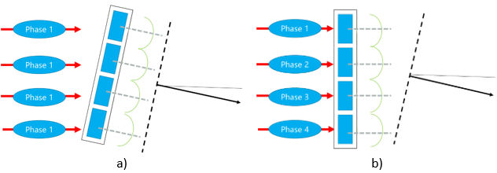

1 Introduction
Low-Level Design (LLD) for the Radio Access Network (RAN) refers to RAN equipment and antenna selection, detailed design of the base station configuration (setting azimuth and tilt values) and the parametrization of the Radio Access Technology (RAT). The RAN LLD impacts on the overall performance of the access network and is the last engineering step before deployment. This raises the necessity for the development of an LLD that efficiently integrates HLD inputs and NaaS Operator requirements into a cost-effective design.
The RAN LLD Module provides the NaaS Operator with instructions for RAN equipment evaluation and selection as well as background information and methodologies to elaborate a detailed design and parametrization of new base stations to be integrated into an existing network or in a region without existing sites. This module focuses on providing a generic end-to-end process flow that can be tailored to match the specific NaaS environment.
Main deliverables that the NaaS Operator will be able to generate through the use of this module are site Data Fills and Configuration Baseline, which are basic documents for the commissioning and integration of new radio sites. In addition, this module will guide NaaS Operator through the process of generating an LLD report to facilitate future network re-configuration and optimization.
1.1 Module Objectives
This module will enable a NaaS Operator to stand-up, run and manage a RAN LLD initiative. The specific objectives of this module are to:
- Provide an information base and fundamentals to perform the tasks associated with RAN LLDs.
- Provide detailed how-to instruction on the key RAN LLD engineering tasks.
- Provide an overview of the end-to-end RAN LLD process with instructions for tailoring to specific NaaS environments.
- Provide guidelines to develop a formal RAN LLD recommendation.
1.2 Module Framework
NaaS Runbooks Framework shown in Figure 1 displays the PlayBook Modules and their relationship to the RAN LLD.
The Strategic Plan & Scope and High-Level Network Architecture modules provide the business and technical context for the NaaS Operator and have direct impact and influence on many aspects of the Network Design.
The RAN LLD Module is included within the Network Design Area. It takes inputs from the RAN HLD and the output generated serves as the required input for the Civil & Power Design module.
Figure 1. PlayBook Framework.
Figure 2 presents the RAN LLD functional view where the main functional components are exhibited. Critical module inputs are further described and examined in section 2.2. In addition, guidance and methodologies to execute the tasks included within each function are described in Section 3.
Figure 2. Overlay RAN LLD Module Functional view.
2 LLD Fundamentals
This section provides a general overview of the baseline concepts to develop an LLD RAN Design.
2.1 Low Level Radio Access Network Environment
Once the High-Level Design (HLD) process is carried out, the NaaS operator will have a general overview of the overall Deployment: number of sites and their configurations. The RAN Low-Level Design (LLD) process focuses on refining the RAN HLD proposed configurations and analyzing their performance by obtaining plots that will help the designer in finding opportunity areas to improve the performance of each site's network. These analyses may involve certain iterations until the designer finds the configuration that maximizes performance results.
Additionally, during the LLD, the NaaS operator must select the equipment and establish the basic parameter to commission a RAN site. Such parameters will be introduced in section 2.3. These parameters will be consolidated in the Data Fill and Network Baseline, whose elaboration will be presented in sections 4.2.6 and 4.2.7 respectively.
RAN LLD is a crucial part of the design process as it sets the final configuration values of the RAN elements. A correct RAN LLD shall minimize optimization tasks and provide a quick time to market of the NaaS initiative, providing a good user experience from network launch.
2.2 Low-Level Radio Access Network Design Inputs Description
Table 1 presents a description of module input data and candidate sources required for a RAN LLD. Furthermore, the impact of each input on the design process is examined.
Table 1. Low-Level Design process inputs summary.
2.3 LTE Air Interface Fundamentals
Long Term Evolution (LTE) air interface is heavily influenced by the requirements for achieving high peak transmission rates, spectral efficiency, and being able to support multiple channel bandwidths (1.4, 3, 5, 10, 15, and-20 MHz) across several operational bands. For a complete table with 3GPP defined frequency bands, please refer to Annex A of the RAN Architecture Module. Figure 3 summarizes carrier bandwidths and spectrum bands used from a coverage and capacity point of view.
Figure 3.Characteristics of spectrum bands and carrier bandwidths.
The specific center frequency for each carrier is not pre-defined within each band. Thus, it is necessary to restrict the locations of the carrier centers for management purposes. With this objective, each carrier in an LTE network is identified within its own frequency band by an attribute called E-UTRAN Absolute Radio Frequency Number (EARFCN).
EARFCN is used to determine the exact frequencies for downlink (DL) and uplink (UL) transmission.
Estimation of
the Downlink and Uplink frequencies ( and  , respectively) is made through the following equations:
, respectively) is made through the following equations:
|
(Eq. 1) |
|
|
(Eq. 2) |
Where:
 Downlink EARFCN
Downlink EARFCN Uplink EARFCN
Uplink EARFCN- Low part of the downlink band
 Low part of the uplink band
Low part of the uplink band- Offset used to calculate downlink EARFCN
- Offset used to calculate uplink EARFCN
Table 15 in Annex A displays values required
for and  computation.
computation.
Equations 1 and 2 can be used to obtain the EARFCN from NaaS Operator DL and UL frequencies. The following steps can be used to determine the EARFCN of a given operating band and operating cell bandwidth (both defined in the RAN Architecture Module).
- Considering cell bandwidth, locate the center of the spectrum block available. Two cases can rise from this step:
- Cell bandwidth is exactly the bandwidth available in the available block.In this case, the cells center frequency must be located exactly at the middle of the available bandwidth as shown in Figure 4.
- Cell bandwidth is smaller than the available bandwidth.
In this case, the cell center must be placed in such a way that the end of the cell bandwidth meets the end of the operating band bandwidth as shown in Figure 5. - Once cell centers are known, the EARFCN calculator widget can be used to compute the corresponding EARFCN for both DL and UL frequencies.
Figure 4. Frequency center location when cell bandwidth and spectrum block bandwidth are equal.

Figure 5. Frequency center location when cell bandwidth and operating band are different.
The LTE air interface implements several techniques to fulfill the high transmission rates and high spectral efficiency requirements, among which, the most important are:
These techniques have a major impact in how radio resources are distributed among the air interface. Deeper insight into the specifics of the LTE air interface can be found on the LTE Air Interface basics primer.
Finally, there is an important aspect of the air interface that is used to achieve user equipment (UE) synchronization to the eNodeB or base station: synchronization signals which are the Primary Synchronization Signal (PSS) and the Secondary Synchronization Signal (SSS).
A User Equipment (UE) wishing to access the LTE system follows a cell search procedure that includes a series of synchronization stages by which the UE determines the time and frequency parameters that are necessary to demodulate downlink signals, to transmit with correct timing and to acquire some critical system parameters. The detection of the PSS and the SSS allows the UE to complete time and frequency synchronization and to acquire basic system information such as Cell Identity, decode broadcast channel, etc.).
The combination
of the different values of PSS and SSS produce a parameter named Physical Cell
Identity (PCI) which is a cell identifier. There are 504 unique PCIs available.
These identities are organized in 168 groups of 3. A PCI is thus uniquely
defined by the number  in the range of 0 to 167 (PCI group) and the number in the range of 0 to 2. Then, a PCI is built following the next
equation:
in the range of 0 to 167 (PCI group) and the number in the range of 0 to 2. Then, a PCI is built following the next
equation:
|
|
(Eq. 3) |
PCI parameter is a key part during LTE planning as it uniquely identifies between cells in the network and collision between cells with the same PCI will be reflected in service degradation. Instructions for its planned allocation will be given in section 3.1.2.
There exist other Low-Level parameters that are part of the configuration of the RAN equipment. However, these parameters are out of the scope of this section as the general recommendation for NaaS operators in the early stages is to follow the default recommendation provided by the RAN equipment vendor.
2.4 Antenna Basics
Antennas are one of the main building blocks of a base station as they transform electrical signals into electromagnetic waves and vice versa allowing for wireless communication. Antennas are considered to have a reciprocity property, which means that an antenna will maintain the same characteristics regardless if it is transmitting or receiving. Main antenna characteristics to be considered during a mobile network deployment are:
- Antenna Directivity and Gain
- Omnidirectional antennas: These antennas radiate in all directions (360 coverage) in the horizontal plane. Omni directional antennas are most used in small cell deployments for indoor or low coverage/capacity scenarios. Representation of an omni directional antenna is shown in Figure 6.
- Directional antennas: These antennas concentrate their energy on a single direction, making them ideal when coverage is required on a specific area of the whole region. Representation of an omni directional antenna is shown in Figure 7.
- Radiation Pattern and Antenna Beamwidth
- Antenna Tilt
Directivity is the ability of an antenna to focus energy on a particular direction when transmitting, or to receive energy better from a particular direction when receiving. This means that it is possible to use a directive antenna to concentrate the radiated signal in the wanted direction. Antennas can be classified into two types regarding their directivity:
Figure 6. Omnidirectional Antenna. a) Side View, b) Top View.

Figure 7. Directional Antenna. a) Side View, b) Top View.
The gain of an antenna is a rather complex concept that can be summarized as the amount of energy radiated in an specific direction compared to the energy that an ideal isotropic antenna would radiate in the same direction when driven with the same input power. Antenna gain results in an increase in the radiated power due to energy focusing.
Therefore, a relationship between antenna directivity and gain can be observed: the more directive the antenna is, the higher its gain, thus, the greater distance it will be able to achieve in a particular direction. On the other hand, an antenna with low directivity (omnidirectional) will have a lower gain.
Radiation pattern describes how the strength of the radiated energy is distributed across all antenna directions. The radiation pattern is also a reception pattern, due to the reciprocity principle of antennas.
As can be assumed, the radiation pattern is a three-dimensional representation of the radiated energy, however, the two must useful views are the vertical view (like if seen the antenna from one side) and horizontal view (like if seen from top of the antenna). Figure 8 shows radiation partners for an omnidirectional antenna while Figure 9 shows radiation pattern for a directional antenna.
Figure 8. Omni Directional Antenna radiation pattern. a) Horizontal pattern, b) Vertical pattern.
Figure 9. Directional Antenna radiation pattern. a) Horizontal pattern, b) Vertical pattern.
Size of the horizontal and vertical views are measured in degrees and are called Horizontal and vertical beamwidth. Commonly, horizontal beamwidth can span from 45 to 85, depending on the deployment scenario: 75 to 85 antennas for two sector sites and 65 antennas for three sector sites.
Regarding vertical beamwidth, 15 is a common value used for most mobile networks.
Antenna tilt represents the inclination of its vertical radiation pattern with respect to its axis. There are two types of Tilt:

Figure 10. Antenna Tilting. a) Mechanical Tilt, b) Electrical Tilt
Final value for antenna tilt is the addition of both mechanical an electrical tilt.